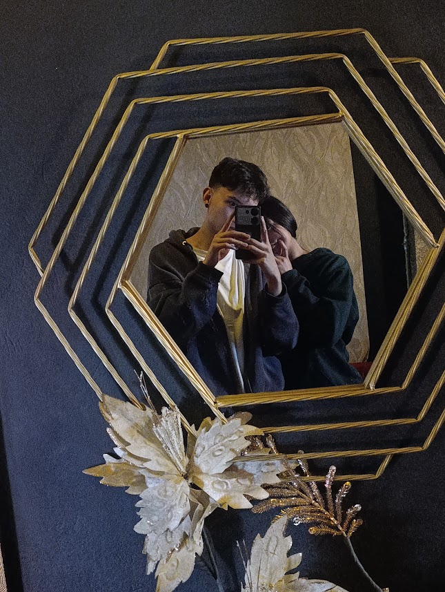
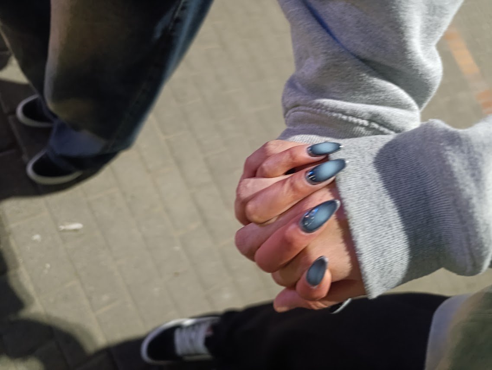
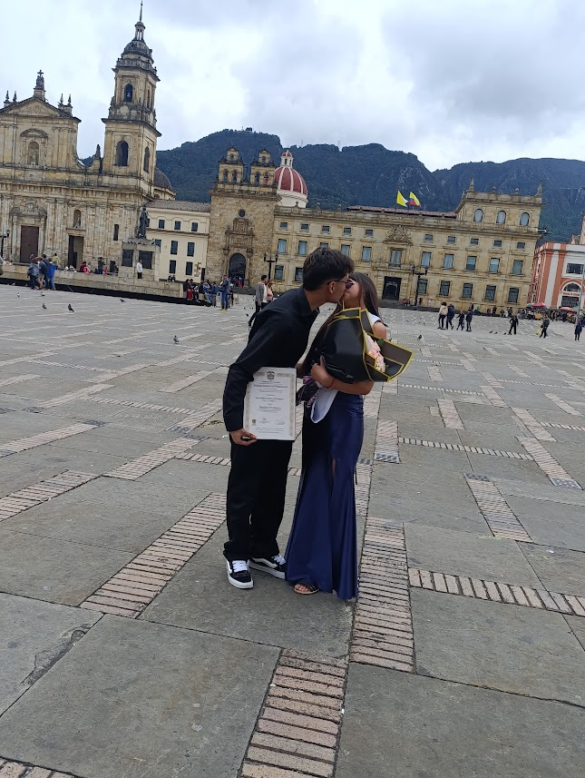
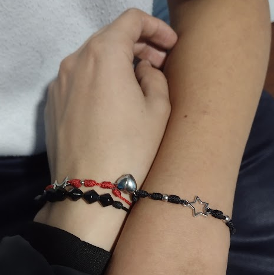
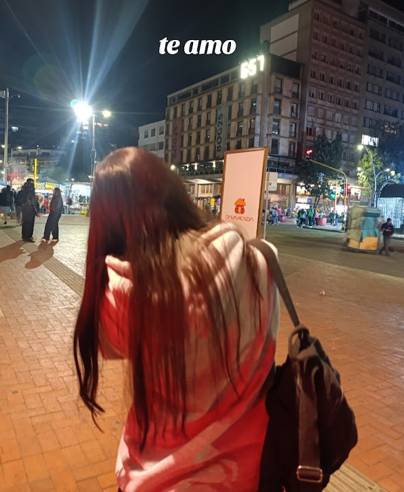
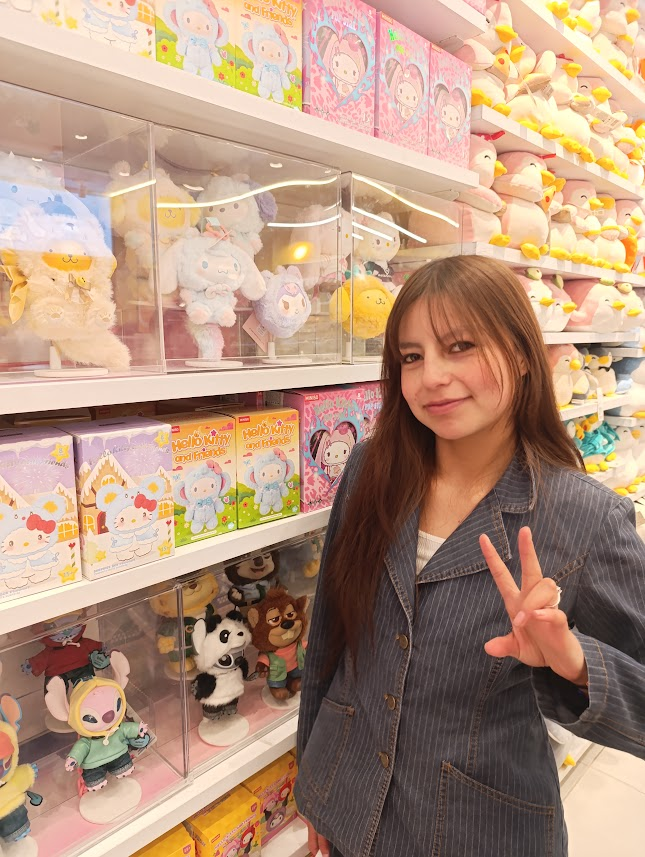
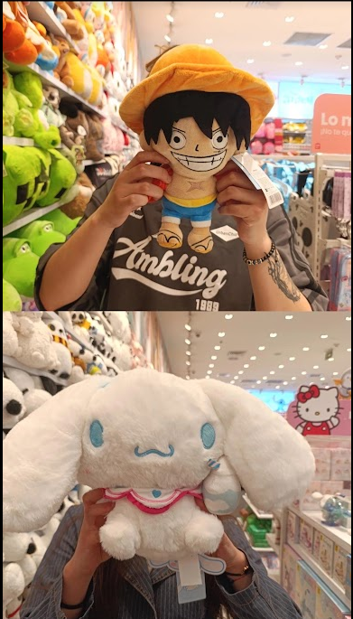
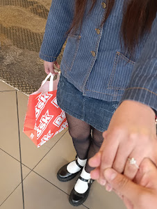

Para ti, mi amor
❦ 🌷 ❦
Una carta para ti
|Para el amor de mi vida|
Hola, mi amor.
Me gustaría comenzar esta carta agradeciendo al destino y a todas las elecciones que nos llevaron a conocernos.
Hoy es tu día. Hace 18 años naciste para darle alegría a tus seres queridos y hoy, también, a tu novio. Quiero aprovechar este día tan especial para plasmar mi amor hacia ti, todo lo que sea necesario y todo lo que sea posible, porque te amo inmensamente.
Te amo como el aire que se siente más puro cuando estamos juntos, como la noche que se vuelve aún más hermosa cuando aparecen las estrellas fugaces y podemos contemplarlas juntos. Porque, de alguna manera, todo parece más bonito cuando estoy contigo.
Eres la mujer que quiero seguir conociendo durante toda mi vida, si me es posible. Quiero conocer cada parte de ti, tus pensamientos, tus sueños, tus alegrías y hasta esos pequeños detalles que te hacen ser la maravillosa mujer de la que me enamoré.
Me enamoran tus maravillosos ojos, que iluminan mi alma, y tus hermosos labios, que besan mi corazón mientras yo beso el tuyo. Me encantas de una manera que a veces siento que las palabras no son suficientes para explicar.
Te amo, mi amor. Feliz cumpleaños. Anhelo seguir celebrando tu existencia, acompañarte en tus días especiales y estar a tu lado mientras la vida nos permita compartir tantos momentos hermosos.
Forever. Quiero seguir eligiéndote, seguir descubriéndote y seguir amándote, hoy, mañana y en cada uno de los días que tengamos la fortuna de compartir.
Te amo, mi mujer. Me encantas, amor de mi vida. 💜
- Con todo mi amor, tu novio Duvan.
Con todo mi amor · 1
✧ ♡ ✧
Nuestros recuerdos
Pequeños momentos que guardo en el corazón.




Nuestros recuerdos · 2
✨ ♡ ✨
Más momentos juntos
Cada instante a tu lado es mi favorito.



Más momentos · 3
♡ 🌷 ♡

Instante especial · 4
♡
🌷 💜
Me gusta tener recuerdos contigo, desde los más grandes hasta esos pequeños detalles que quizá parecen simples, pero que para mí significan muchísimo.
Quiero seguir sumando momentos, fotografías, abrazos y razones para sonreír a tu lado.
🌷 💜 🌷
Un capítulo más · 5
❦ 💜 ❦
Feliz cumpleaños mvd
Gracias por existir y llenar mi vida de luz. Te amo con todo mi corazón.
Calculando nuestro tiempo juntos...
🌷 💜 🌷
Siempre tuyo · 6
♡ 🌷
Para la dueña de mi corazón
Mi amor,
para ti
para ti
Una carta, nuestros recuerdos y mi voz
🌷 💜 🌷
TOCA PARA ABRIR
Tu grabación está incluida. Pulsa el botón para escucharla.
Pasa las páginas para ver tus recuerdos y escucha mi voz cuando quieras.